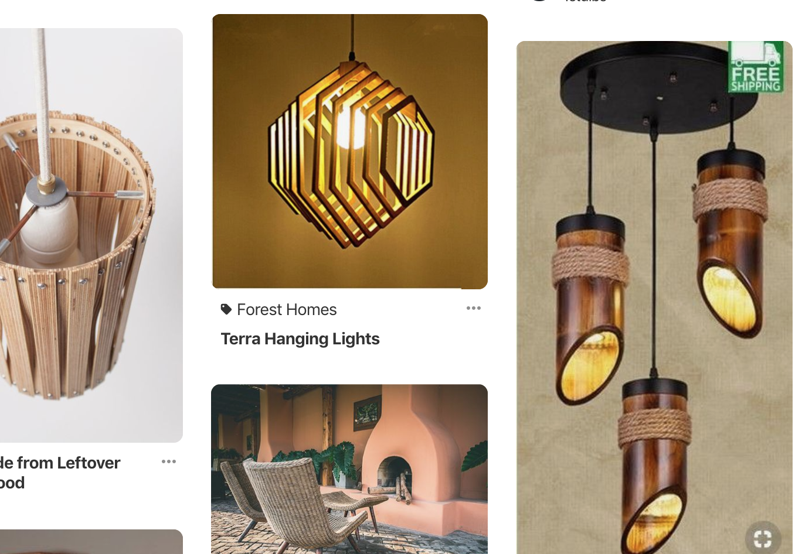
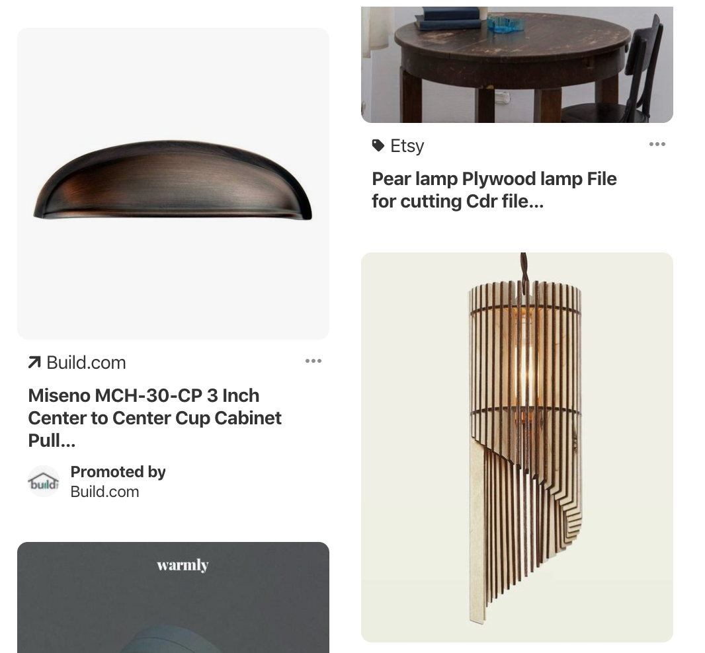
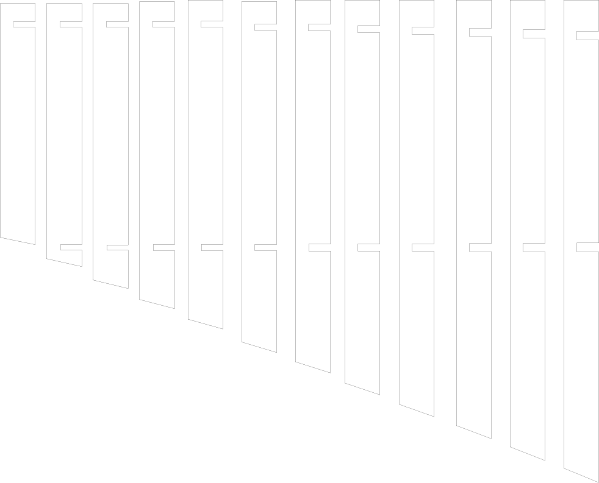
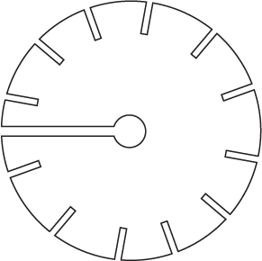

A3 3D printing + lasercutting lamp!

Source Files: Illustrator, stl
Design Process
I built a symetricall night lamp with a 3D printed connector and 12 wooden laser cut bars.
I first started with browsing through pintrest on different wooden lamps. Then I really liked the design of some lamps and choose to do the 2nd one in the corner. I then thought what would be more feasible and workable to build. Then I though of the materials that can be used apart from the filament for laser cut.
While looking at the design of the lamp, I also tried to explore different design of the connector. Considering that the support will be made from the 3D printer with 0.35 inch thickness, and the lampshades will be made of wood MDF of .12 inch thickness, I decided to design the connector with a gap on the going from side to the center.
 
After deciding on the basic structure, I then measured the metrics of the lamp wire I am using, and designed the connectors and lampshades in Illustrator. I created 12 0.8 inch x (Varying lenghts height with the 0.5 difference starting from 5.5 to 11in).
Then I designed 4x4inch circle in the illustrator with 12 gaps of 0.12inch and and 13th gap for the wire to go through which was 0.4inch.
 
After finishing the design of lamp, I expoerted the ai file for extruding the 3D connector in Rhino, and I had to be careful as I was struggling with Rhino and I first used illustrator and then used Rhino.
Printing and Cutting Process
First, I thought of doing the bars to be 3D printed and connectors to be wood. On the weekend I visited the lab and actually printed my bars using the Raise 3D printers but they went teribbly wrong because of raft being thicker than the bars and it took 4.5 hours to print. I more of had an idea of using the 3D printer for the bars but beacuse of it going other way around I decided to use 3D printed connectors instead of the bars.


Then on tuesday, because I then changed the plan and thought of using MDF 300mm width wood I had to recreate my illustrator files to match the width of the connector and wood gaps. Then I began to print the 3d Print connector. My first build on the connect the spaces turned out to be little smaller than expexted. So, I had to change the dimension a bit and reprint it again. For the second print I uploaded the file from Rhino to edited the circle from flat surface to extruding it and capping it according to the size of 0.4in as I wanted. Then imported the stl file to Simplify3D as the staff at the Mill suggested, and used mostly default settings to print the connector. I changed the quality to medium (0.2mm) in order to print faster and the fill to at 25%.

Then I started to print! The first one didnt go very well but the second one was actually the best one in all my 3D printed parts. As Dremel estimated, it took about 1hr 41 minutes to finish.


I really had a bit of a difficult time when figuring out the way I want things to be printed. I had a huge first fail and it kind of took a lot of time then I expected it to be. It just felt so much time consuming because of learning how to work the softwares at the same time. If I happen to knew how it works and how to better deal with Rhino I think the process would have been a little bit easier. I wish I could enjoy the process of creating along rather than just putting stuff together. The laser cutting of the bars turned out to be bit easer. I used 28 x 11inch wood board to get my 12 bars printed. I used the following setting to get my wood cut nicely and not burt it.


After 8 hours at Mill, I finally got all the materials I need for the lamp!
Lamp Demo
The lamp turned out to be fine! Tough I had to be really careful when putting them together to not break the 3D printed connector or the bars as the were press fitting.

Acknowledgement
Thanks to Joshua help in the office hour; As well as a big thanks to Lucas, Megha, Julie Do for answering my questions and helping with the build and html.